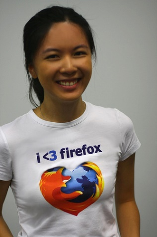

Nino Vranešič
Email: nino@mozilla.si | Twitter: @ninovranesic | FB: facebook.com/nino.vranesic
Kaj je Mozilla?
- Neprofitna organizacija
- Globalna skupnost, ki s skupnimi močmi spreminja svet na bolje
- Razvoj brezplačne odprtokodne programske opreme ter tehnologij, ki izboljšujejo uporabniško izkušnjo
Kratka zgodovina
- 1994 - Mozilla, razvojno ime brkalnika Netscape Navigator
- 31. marec 1998 - Netscape izda izvorno kodo in ustanovi neprofitno organizacijo Mozilla.org
- 15. julij 2003 - Mozilla.org se prelevi v The Mozilla Foundation in postane samostojna
Cilj: Zadovoljstvo uporabnikov, pred dobičkom.
Firefox
Email: nino@mozilla.si | Twitter: @ninovranesic | FB: facebook.com/nino.vranesic
http://mozilla.si https://www.facebook.com/mozillaslovenija https://twitter.com/MozillaSI